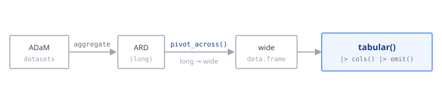

# how it was built (data-raw):
cdisc_saf_demo_ard <- cards::ard_stack(
adsl,
.by = TRT01A,
cards::ard_continuous(
variables = c(AGE, BMI),
statistic = ~ cards::continuous_summary_fns(c(
"N",
"mean",
"sd",
"median",
"min",
"max"
))
),
cards::ard_categorical(variables = c(AGEGR1, SEX, RACE))
)tabular displays a wide frame; clinical aggregation produces a long Analysis Results Dataset (ARD). pivot_across() is the bridge — it widens an ARD into the frame tabular() consumes.

pivot_across() widens it into the wide frame tabular() consumes.The ARDs used below ship with the package, so these examples run without cards/cardx installed; each is shown next to the code that produced it.
The one rule: key statistic by the ARD’s context
pivot_across(statistic = list(...)) matches its list names against the ARD’s context column verbatim. That value depends on which function built the ARD — use the wrong key and those rows are dropped silently. Always check unique(ard$context) first.
| Generating function | context |
|---|---|
cards::ard_summary() |
summary |
cards::ard_tabulate() |
tabulate |
cards::ard_continuous() |
continuous |
cards::ard_categorical() |
categorical |
cards::ard_stack_hierarchical() |
tabulate + hierarchical
|
cardx::ard_categorical_ci() |
proportion_ci |
cardx::ard_continuous_ci() |
continuous_ci |
A single string, or statistic = list(default = ...), applies one format to every context.
Mixed continuous + categorical
cdisc_saf_demo_ard was stacked from a continuous and a categorical block, so it carries the continuous and categorical contexts:
data(cdisc_saf_demo_ard, package = "tabular")
unique(cdisc_saf_demo_ard$context)
#> [1] "continuous" "categorical" "tabulate"
wide <- pivot_across(
cdisc_saf_demo_ard,
statistic = list(
continuous = c(
N = "{N}",
"Mean (SD)" = "{mean} ({sd})",
Median = "{median}",
"Min, Max" = "{min}, {max}"
),
categorical = "{n} ({p}%)"
),
# CDISC precision: SD carries one more decimal than the mean. AGE/BMI are
# whole numbers here (raw precision d = 0), so mean = d + 1 = 1, sd = d + 2 = 2,
# median = d + 1 = 1, and min/max keep the raw precision (0).
decimals = c(mean = 1, sd = 2, median = 1, min = 0, max = 0, p = 0)
)
head(wide, 8)
#> variable stat_label Placebo Xanomeline High Dose Xanomeline Low Dose
#> 1 AGE N 86 72 96
#> 2 AGE Mean (SD) 75.2 (8.59) 73.8 (7.94) 76.0 (8.11)
#> 3 AGE Median 76.0 75.5 78.0
#> 4 AGE Min, Max 52, 89 56, 88 51, 88
#> 5 WEIGHT N 86 72 95
#> 6 WEIGHT Mean (SD) 62.8 (12.77) 69.5 (14.35) 68.0 (14.50)
#> 7 WEIGHT Median 60.6 69.0 66.7
#> 8 WEIGHT Min, Max 34, 86 44, 108 42, 106
#> Total
#> 1 254
#> 2 75.1 (8.25)
#> 3 77.0
#> 4 51, 89
#> 5 253
#> 6 66.6 (14.13)
#> 7 66.7
#> 8 34, 108decimals = c(p = 0) gives integer percent with the pharma <1 / >99 thresholds; n = 0 cells collapse to a bare "0" automatically. The widened frame is now ready for tabular() — see Structure.
Confidence-interval cells (and hand-built ARDs)
cardx CI functions emit their own contexts (proportion_ci, continuous_ci) with estimate / conf.low / conf.high stats. pivot_across() consumes any frame that follows the cards long-format, so you can feed it a cardx ARD or build the few rows by hand — useful when a statistic is computed outside cards:
# from cardx:
orr_ard <- cardx::ard_categorical_ci(
resp,
by = "TRT01A",
variables = "RESP",
method = "clopper-pearson",
conf.level = 0.95
)
# equivalent hand-built ARD (one row group, proportion_ci context).
# tribble() lays the long ARD out as a literal table: one row per
# (arm, stat), with the estimate and its CI bounds visible inline.
orr_ard <- tibble::tribble(
~group1, ~group1_level, ~variable, ~variable_level, ~context, ~stat_name, ~stat,
"TRT01A", "Placebo", "RESP", "Responders", "proportion_ci", "estimate", 0.62,
"TRT01A", "Placebo", "RESP", "Responders", "proportion_ci", "conf.low", 0.50,
"TRT01A", "Placebo", "RESP", "Responders", "proportion_ci", "conf.high", 0.73,
"TRT01A", "Xanomeline Low Dose", "RESP", "Responders", "proportion_ci", "estimate", 0.55,
"TRT01A", "Xanomeline Low Dose", "RESP", "Responders", "proportion_ci", "conf.low", 0.42,
"TRT01A", "Xanomeline Low Dose", "RESP", "Responders", "proportion_ci", "conf.high", 0.67,
"TRT01A", "Xanomeline High Dose", "RESP", "Responders", "proportion_ci", "estimate", 0.48,
"TRT01A", "Xanomeline High Dose", "RESP", "Responders", "proportion_ci", "conf.low", 0.36,
"TRT01A", "Xanomeline High Dose", "RESP", "Responders", "proportion_ci", "conf.high", 0.60,
)
pivot_across(
orr_ard,
statistic = list(proportion_ci = "{estimate} ({conf.low}, {conf.high})"),
decimals = c(estimate = 3, conf.low = 3, conf.high = 3)
)
#> variable stat_label Placebo Xanomeline Low Dose
#> 1 RESP Responders 0.620 (0.500, 0.730) 0.550 (0.420, 0.670)
#> Xanomeline High Dose
#> 1 0.480 (0.360, 0.600)Hierarchical SOC / PT
A hierarchical ARD widens to a soc / label / row_type triple (not a single variable), ready for an indented SOC ▸ PT layout:
data(cdisc_saf_aesocpt_ard, package = "tabular")
ae <- pivot_across(cdisc_saf_aesocpt_ard, statistic = "{n} ({p}%)")
ae$indent <- as.integer(ae$row_type == "pt") # depth for col_spec(indent_by=)
head(ae, 6)
#> soc label
#> 1 Overall Overall
#> 2 SKIN AND SUBCUTANEOUS TISSUE DISORDERS SKIN AND SUBCUTANEOUS TISSUE DISORDERS
#> 3 SKIN AND SUBCUTANEOUS TISSUE DISORDERS PRURITUS
#> 4 SKIN AND SUBCUTANEOUS TISSUE DISORDERS ERYTHEMA
#> 5 SKIN AND SUBCUTANEOUS TISSUE DISORDERS RASH
#> 6 SKIN AND SUBCUTANEOUS TISSUE DISORDERS HYPERHIDROSIS
#> row_type Placebo Xanomeline High Dose Xanomeline Low Dose indent
#> 1 overall 52 (60%) 66 (92%) 81 (84%) 0
#> 2 soc 19 (22%) 35 (49%) 36 (38%) 0
#> 3 pt 8 (9%) 25 (35%) 21 (22%) 1
#> 4 pt 8 (9%) 14 (19%) 14 (15%) 1
#> 5 pt 5 (6%) 8 (11%) 13 (14%) 1
#> 6 pt 2 (2%) 8 (11%) 4 (4%) 1(Turning soc/label/indent into the indented stub is in Structure.)
A two-variable .by
ard_stack(.by = c(ARM, SEX)) carries a second grouping variable. Name it with row_group = and pivot_across() widens it into a leading row column (rather than mis-reading it as a SOC/PT hierarchy). Here is the cards long shape such a stack produces (RACE by ARM within SEX), built by hand so the example runs without cards:
# RACE by ARM within SEX, laid out as a literal tribble: one row per
# (sex, race, arm, stat). Stats are placeholders (n = 10, p = 0.25).
two_by_ard <- tibble::tribble(
~group1, ~group1_level, ~group2, ~group2_level, ~variable, ~variable_level, ~context, ~stat_name, ~stat,
"ARM", "Placebo", "SEX", "F", "RACE", "WHITE", "categorical", "n", 10,
"ARM", "Placebo", "SEX", "F", "RACE", "WHITE", "categorical", "p", 0.25,
"ARM", "Drug", "SEX", "F", "RACE", "WHITE", "categorical", "n", 10,
"ARM", "Drug", "SEX", "F", "RACE", "WHITE", "categorical", "p", 0.25,
"ARM", "Placebo", "SEX", "F", "RACE", "BLACK", "categorical", "n", 10,
"ARM", "Placebo", "SEX", "F", "RACE", "BLACK", "categorical", "p", 0.25,
"ARM", "Drug", "SEX", "F", "RACE", "BLACK", "categorical", "n", 10,
"ARM", "Drug", "SEX", "F", "RACE", "BLACK", "categorical", "p", 0.25,
"ARM", "Placebo", "SEX", "M", "RACE", "WHITE", "categorical", "n", 10,
"ARM", "Placebo", "SEX", "M", "RACE", "WHITE", "categorical", "p", 0.25,
"ARM", "Drug", "SEX", "M", "RACE", "WHITE", "categorical", "n", 10,
"ARM", "Drug", "SEX", "M", "RACE", "WHITE", "categorical", "p", 0.25,
"ARM", "Placebo", "SEX", "M", "RACE", "BLACK", "categorical", "n", 10,
"ARM", "Placebo", "SEX", "M", "RACE", "BLACK", "categorical", "p", 0.25,
"ARM", "Drug", "SEX", "M", "RACE", "BLACK", "categorical", "n", 10,
"ARM", "Drug", "SEX", "M", "RACE", "BLACK", "categorical", "p", 0.25,
)
pivot_across(
two_by_ard,
column = "ARM",
row_group = "SEX",
statistic = list(categorical = "{n} ({p}%)")
)
#> SEX variable stat_label Placebo Drug
#> 1 F RACE WHITE 10 (25%) 10 (25%)
#> 2 F RACE BLACK 10 (25%) 10 (25%)
#> 3 M RACE WHITE 10 (25%) 10 (25%)
#> 4 M RACE BLACK 10 (25%) 10 (25%)When a 2-variable .by is present you must say which variable is the arm column (column =) and which is the row dimension (row_group =); the SEX column then composes with subgroup() or col_spec(usage = "group") downstream. cards encodes a crossing factor and a real hierarchy identically, so the declaration is what disambiguates them — leave row_group unset for a genuine SOC/PT hierarchy.
Key statistic by the context
The one thing to get right: key statistic by the ARD’s context. Inspect unique(ard$context) and key the list to match (or pass a single string / default =). If an explicitly-supplied statistic matches no context, pivot_across() warns rather than silently falling back to {n}.